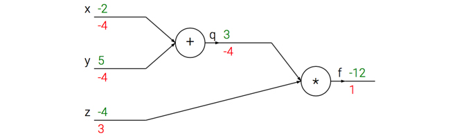
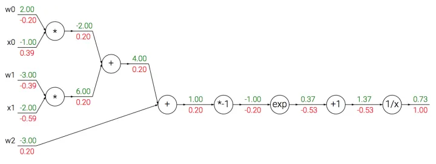
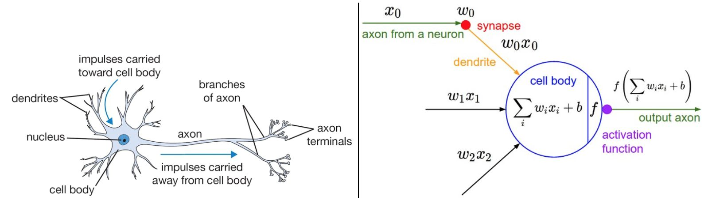
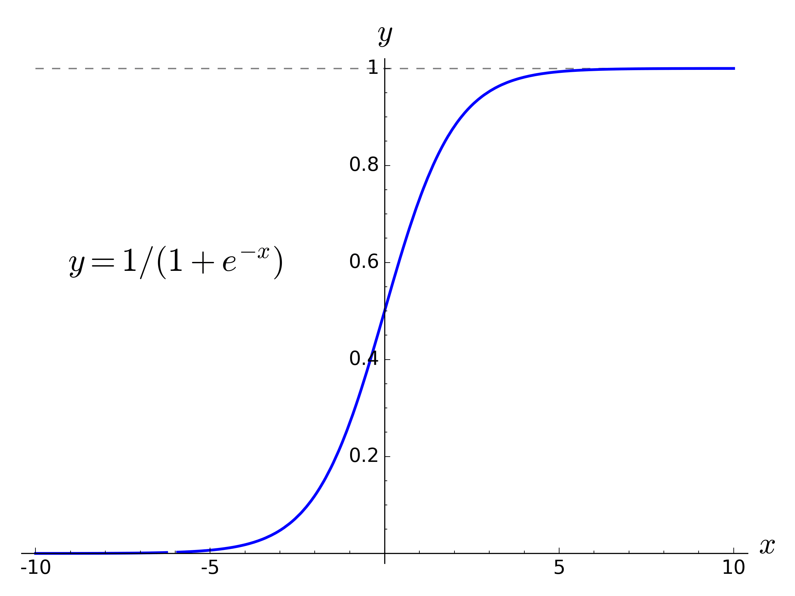
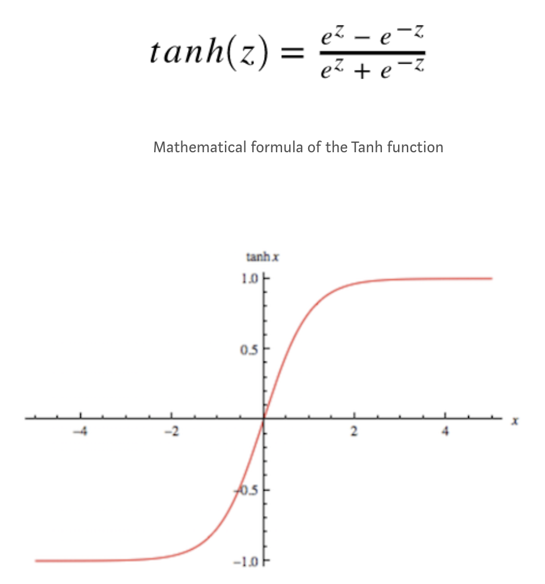

「CS231n Course 3」神经网络简介
Part 0 前言
参考资料：
- b站 CS231n 4.1 反向传播
- b站 CS231n 4.2 神经网络
- 知乎 反向传播笔记
- 神经网络笔记1（上）
- CS231n Backprop Note(official)
- 神经网络笔记1（下）
- CS231n Neural Network Note-1(official)
Part 1 反向传播
反向传播，Back Propagation(BP)，是利用链式法则（chain rule）递归计算表达式的梯度的方法。
核心问题
对给定函数$f(x)$，其中$x$是输入数据的向量，需要计算函数$f$关于$x$的梯度$\nabla f(x)$。
目的
在神经网络中，$f$ 对应的是损失函数 $L$，输入 $x$ 中包含训练数据和神经网络的权重。
例子：对于 SVM，损失函数是 SVM 的损失函数，输入包含了训练数据 $(x_i, y_i), i=1 … N$，权重 $W$，偏差 $b$。训练集是给定的，权重是可以控制（更新）的变量。因此，在实践上，尽管可以计算输入数据 $x_i$ 上的梯度，但是为了进行参数更新，通常只计算参数（如 $W, b$ ）的梯度。而 $x_i$ 的梯度在一些情形如可视化以直观理解时可以用上。
从（标量）简单表达式引入
考虑一个简单的二元乘法函数：
对$x$和$y$分别求偏导数：
（偏）导数的意义是，当函数变量在某个点周围的极小区域内变化，而导数是变量变化导致的函数在该方向上的变化率，数学定义如下：
梯度
梯度$\nabla f$是偏导数的向量，因此（继续上面的例子）有：
特别地，即使梯度实际上是一个向量，但通常仍会使用类似”$x$上的梯度“的（非正式）表述，而非”$x$的偏导数“的正确说法，这是因为前者更简单。
对加法求偏导
对$max$求导
该式说明如果该变量比另一个大，则梯度是 $1$，反之为 $0$。
使用链式法则计算复合表达式
对于复杂的包含多个函数的复合函数，如：
可以将其拆分为两个部分：
对其分别求偏导：
值得注意的是，$q$ 是我们构造的中间量，我们实际上不关心 $q$（即，不关心 $\frac{\partial f}{\partial q}$），而关心 $f$ 关于 $x,y,z$ 的梯度。链式法则（chain rule）给出了对于求解 $f$ 关于 $x,y,z$ 梯度表达式的方式：通过相乘。如：
计算图例子

前向传播（forward pass）：绿色数字是量的值（ $x,y,z$ 的初始值是我们设定的，没有特殊含义），从左到右（前向）进行依次通过算子（节点（node）/门（gate））
反向传播（backword pass）：红色数字是 $f$ 相对于当前变量（假定为 $u$ ）的梯度，从右到左（反向/后向）依次通过算子进行链式法则。$f$ 的梯度初始值是 $1$，这是因为 $\frac{\partial f}{\partial f} = 1$
直观理解
每个节点（node），也叫做门（gate），具有前向传播和反向传播两种计算：
- 前向传播计算：输入是若干节点的值，输出是经过该节点的运算结果。如上图中$+$门的两个输入是 $-2$ 和 $5$，输出是 $-2+5=3$
- 反向传播计算：输入是链式法则上一步的梯度，输出是链式法则的下一步梯度。如上图中$\times$门的输入是 $1$，输出有两个分支方向，对于 $q$ 方向，由于 $\times$ 运算的偏导数是对方（如$f(x, y) = xy \quad \frac{\partial f}{\partial x} = y \quad
\frac{\partial f}{\partial y} = x$），因此局部梯度为 $z$ 即为 $-4$，因此链式法则的下一步梯度得到 $1 \times (-4) = -4$；对于 $z$ 方向，由于 $\times$ 运算的偏导数是对方，因此局部梯度为 $q$ 即为$3$，因此链式法则的下一步梯度得到 $1 \times 3 = 3$
反向传播可以看作门单元之间在通过梯度信号相互通信。
模块化：以 $Sigmoid$ 为例
上面的例子比较直观，我们给出对门更精确的描述：任何可微函数都可以看作门，可以将多个门组合成一个门，也可以根据需求将一个门拆分为多个门。一个复杂的例子：
事实上，这个表达式描述了一个含输入$x$和权重$w$的2维神经元，使用了 $Sigmoid$ 激活函数。
除了上文的加法门、乘法门和 $max$ 门，还有下述门：
计算图

$Sigmoid$
$Sigmoid$ 函数也被记为 $\sigma (x)$，形式如下：
求导结果为：
因此，可以将原式转为：
因此，将原来计算图中的 $*-1,exp,+1,\frac{1}{x}$ 合并为 $\sigma $，一次性算出 $(1-0.73) \times 0.73=0.20$ ，这也说明我们可以根据需求将多个门合并为一个门，也可以将一个门拆分为多个门。
回传流中的模式
多数时候，反向传播中的梯度可以被直观地解释。
加法门
将输出的梯度相等地分发给所有输入，与输入值在前向传播时的值无关。
$max$ 门
$max$ 门将梯度转给其中一个输入，该输入是前向传播中值最大的那个输入。
乘法门
乘法门的局部梯度就是相互交换的输入值，然后根据链式法则乘以输出值的梯度。
对向量操作计算梯度
之前引入的内容都考虑的单个变量，但所有概念都适用于矩阵和向量操作。值得注意的是，操作时需要注意维度和转置操作。
矩阵相乘的梯度
一个有用的技巧：矩阵（向量）的尺寸（维度）和其梯度是一致的，据此我们可以知道如何使维度相符合。比如，$X$的尺寸是$[10, 3]$， $dD$的尺寸是 $[5, 3]$，如果想要 $dW$ 和 $W$ 的尺寸是 $[5, 10]$ ，那么需要 $dD.dot(X.T)$
Part 2 神经网络
线性分类与神经网络
在之前的线性分类笔记中，我们使用了 $s=Wx$ 来计算不同视觉类别的评分，其中 $W$ 是一个权重矩阵， $x$ 是一个包含了图像的全部像素数据的输入列向量。具体地，在CIFAR-10中， $x$ 是 $[3072 \times 1]$ 的列向量，$W$ 是 $[10 \times 3072]$ 的矩阵，输出的评分是 $[10 \times 1]$ 列向量，表示 $10$ 个分类的评分。
而神经网络有所不同，（一个两层神经网络，2-layer Neural Net）的计算公式是：
其中， $W_1$ 的含义是：如，它可以是一个 $[100\times 3072]$ 的矩阵，可以将图像转为一个 $[100 \times 1]$ 的过渡向量。
函数 $max(0, -)$ 是非线性的，会作用于每个元素，称为激活函数，它的选择有很多种。在这里， $max$ 函数简单地设置了阈值，将所有小于 $0$ 的值变为 $0$ 。
矩阵 $W_2$ 的尺寸是 $[10 \times 100]$ ，最终可以得到一个 $[10 \times 1]$ 的列向量，每个元素（数字）可以解释为分类的评分。
在上面，我们注意到神经网络和线性分类的重要区别在于非线性函数。假如没有非线性函数，那么两个矩阵会乘在一起，合并为一个矩阵，那么就会重新变成线性函数（分类）。因此，这个非线性函数就是变化的关键。
参数 $W_1$ 和 $W_2$ 会通过随机梯度下降来学习，他们的梯度在反向传播中通过链式法则求导计算。
类似地，三层神经网络可以看做：
其中， $W_1, W_2, W_3$ 是需要进行学习的参数，中间隐层（hidden layer）的尺寸是网络的超参数，后续会学习如何设置。
神经元（Neuron）
神经网络算法最开始是受到生物神经系统建模的启发，但是很快与其分道扬镳，成为一个工程问题。因此，这方面的讨论局限于高度抽象的简略描述，不做过多的类比牵连。
连接与信号

左边是生物神经元，右边是（神经网络中的）神经元计算模型。
- 生物模型中，每个神经元从树突获得输入信号，沿着唯一轴突产生输出信号。轴突在末端会分支，通过突触和其他神经元的树突相连。
- 计算模型中，沿着轴突传播的信号（这里是 $x_0$），传播至下一个神经元时，会基于突触的强度（这里是 $w_0$），和该神经元的树突进行乘法交互（这里是 $w_0x_0$）。这里，突触的强度（也就是权重 $w$ ）是可以学习的，而且可以控制一个神经元对另一个神经元影响的强度（还可以控制影响方向：使其兴奋（正权重）或抑制（负权重））
- 生物模型中，树突将信号传递到细胞体，信号在细胞体中相累加，如果和高于某个阈值，则神经元被激活，向其轴突输出一个峰值信号。
- 计算模型中，假设峰值信号的准确时间点不重要，重要的是激活信号的频率。这个基于速率编码（firing rate）的观点将神经元的激活率建模为激活函数（activation function）$f$ ，表达轴突上的激活信号的频率。
- 历史上激活函数常选择使用 sigmoid 函数 $\sigma$，该函数输入实数值（求和后的信号值），将输入值压缩到 0-1 之间。
常用激活函数
$Sigmoid$
$Sigmoid$ 公式如下：
函数图像如下：

$Sigmoid$ 函数输入实数值，并将其压缩到 $0$ 到 $1$ 的范围内。具体地，很大的负数变为 $0$ ，很大的正数变为 $1$ 。
$Sigmoid$ 对于神经元的激活频率有良好的解释：从完全不激活（$0$）到在求和后的最大频率处的完全饱和的激活（$1$）。尽管历史上比较常用，但是现在已经很少使用了，因为有两个主要缺点：
- $Sigmoid$ 函数饱和使梯度消失。当神经元的激活在接近 $0$ 或 $1$ 处时会饱和，梯度接近 $0$。由于反向传播时，局部梯度会和输出的梯度相乘，如果局部梯度很小（接近 $0$ ），那么相乘的结果会接近 $0$ ，这回“杀死”梯度。
- $Sigmoid$ 函数的输出不是零中心的。
$tanh$
$tanh$ 公式如下：
函数图像如下：

ReLU
ReLU公式如下：
TODO
Leaky ReLU
Leakly ReLU公式如下：
TODO
Maxout
Maxout公式如下：
是 ReLU 和 Leakly ReLU 的一般化归纳。
TODO
神经网络结构
学习神经网络结构非常重要，可以帮助阅读文献的架构图（笔者注）
分层组织（layer-wise organization）
将神经网络算法以神经元的形式图形化。神经网络被建模成神经元的集合，神经元之间以无环图的形式进行连接。这也就是说，一些神经元的输出是另一些神经元的输入。神经网络中不允许循环，因为循环会导致前向传播（正向传播，forward pass）的无限循环。
通常，神经网络模型中的神经元是分层的，这不像生物神经元会聚合成大小不一的团状。对于普通的神经网络，最普通的层的类型是全连接层（fully-connected layer）。

左边是2层神经网络（2-layer neural network），右侧是3层神经网络（3-layer neural network）
全连接层中的神经元与前后两层的神经元是完全成对连接的，但同一个全连接层内的神经元之间没有连接。
上图中左侧的2层神经网络的隐层（hidden layer）包含4个神经元（neural，也可以称为单元unit），输入层由3个神经元组成，输出层由2个神经元组成；右侧图是一个3层神经网络，有2个包含4个神经元的隐层。在这两个神经网络中，层与层之间的神经元是全连接的，但是层内的神经元不连接。
命名规则
当说“N层神经网络（N-layer neural network）”时，并没有将输入层算入。因此，单层的神经网络是没有隐层的（指输入直接映射到输出）。因此，有人认为逻辑回归（logistic regression）和支持向量机（SVM）是一种单层神经网络（single-layer neural network）的特例。
人们也会使用人工神经网络（Artificial Neural Network, ANN）或多层感知器（Multi-Layer Perceptrons, MLP）来指代神经网络（Neural Network, NN）。
也有人不喜欢神经网络算法和人类大脑的类比，他们更倾向于使用单元（unit）而非神经元（neuron）作为术语。
输出层（Output layer）
和神经网络中的其他层不同，输出层的神经元一般没有激活函数（或者认为有一个线性相等的激活函数）。这是因为最后的输出层大多用来表示分类评分值，因此是任意值的实数，或者某种实数值的目标数（比如在回归regession中）。
确定网络尺寸（Sizing neural networks）
用来度量神经网络尺寸的标准主要有两个：神经元个数和参数个数。以上图两个网络举例：
左侧网络有 $4+2=6$ 个神经元（输入层不算），$[3 \times 4] + [4 \times 2]=20$ 个 权重（weights），$4+2=6$ 个偏置（bias），共 $26$ 个可学习的参数。
右侧网络有 $4+4+2=10$ 个神经元（输入层不算），$[3 \times 4]+[4 \times 4]+[4 \times 1]=32$ 个权重（weights）， $4+4+1=9$ 个偏置（bias），共 $41$ 个可学习的参数。
常识：现代卷积神经网络能包含约1亿个参数，可由 $10-20$ 层构成（深度学习，deep learning）。然而，有效连接（effective connections）的个数因为参数共享的缘故大大增多，这在后面CNN的章节会详细介绍。
前向传播计算举例（feed-forward computation）
不断重复的矩阵乘法和激活函数相交织。
将神经网络组织成层状的一个重要原因，就是这个结构让神经网络算法使用矩阵向量操作变得简单和高效。以上图右侧的三层神经网络举例，输入是 $[3 \times 1]$ 的向量。一个层所有连接的强度（all connections strength）可以被存在一个单独的矩阵中。如第一个隐层权重 $W_1$ 是 $[4 \times 3]$ 的，所有单元的偏置储存在 $b_1$ 中，尺寸是 $[4 \times 1]$ 。这样，每个神经元的权重保存在 $W_1$ 的一个行中（这里笔者有结合神经元结构的思考，详见下面的注释），因此矩阵乘法 np.dot(W1,x) 可以计算该层所有神经元的激活数据。类似地， $W_2$ 是 $[4 \times 4]$ 矩阵，存储第二个隐层的连接强度，$W_3$ 是 $[1 \times 4]$ 用于输出层。因此可以总结，完成的 $3$ 层神经网络的前向传播就是简单的 $3$ 次矩阵乘法，交织着激活函数的应用。
对于上图右侧的神经网络的第一个隐层（hidden layer 1），该层的每个神经元 $unit{2,i}, i \in {1,2,3,4}$ （$unit{2,i}$ 表示第 $2$ 层第 $i$ 个神经元）会接收来自上层的（这里是input layer）每个神经元传递的信号（如 $unit{1,j}, j \in {1,2,3}$ ），以进行 $unit{2,i}$ 的信号计算（$\sum{j}w_jx_j, j \in {1,2,3}$，其中 $w_j$ 是 $unit{2, i}$ 对上一层第 $j$ 个神经元的权重，$x_j$ 是上一层第 $j$ 个神经元传播出的信号）。因此，将 $w_j, j \in {1,2,3}$ 写成一个 $[3 \times 1]$ 的向量即为上文中描述的“ $W_1$ 中的一个行”。
因此， $W_1$ 的尺寸为 $[4 \times 3]$ 中，$4$ 指本层的神经元个数，$3$ 指上层的神经元个数。因此容易知道 $W_2$ 的尺寸是 $[4 \times 4]$
1 | # 一个3层神经网络的前向传播: |
在上述代码中 $W_1, W_2, W_3, b_1, b_2, b_3$ 都是网络中可学习的参数。值得注意的是，$x$ 并不是一个单独的列向量，而可以是一个批量训练数据（其中每个输入样本会是 $x$ 中的一列），所有样本会被并行化地高效计算出来。
全连接层的前向（正向）传播一般就是先进行一个矩阵乘法，然后加上偏置并使用激活函数。
表达能力
理解全连接层神经网络的一个方式是，可以认为其定义了一个由一系列函数组成的函数族（family of functions），网络的权重是每个函数的参数。因此问题是：该函数族的表达能力如何？存在不能被神经网络表达的函数吗？
可以证明拥有至少一个隐层的神经网络是一个通用的近似器。对给定的任意连续函数 $f(x)$ 和任意 $\epsilon > 0$，均存在至少含一个隐层的神经网络 $g(x)$ （且网络中有合理选择的非线性激活函数，如 sigmoid ），对于 $ \forall x$ ，使得 $|f(x) - g(x)|<\epsilon$ 。换句话说，该神经网络可以近似任何连续函数。
既然一个隐层就能近似任何函数，那为什么还要构建更多层来将网络做得更深？答案是：虽然一个2层网络在数学理论上能完美地近似所有连续函数，但在实际操作中效果相对较差。在一个维度上，虽然以 $a,b,c$ 为参数向量“指示块之和”函数 $g(x)=\sum_{i}c_i \mathbb{l} (a_i < x < b_i)$ 也是通用的近似器，但是谁也不会建议在机器学习中使用这个函数公式。神经网络在实践中非常好用，是因为它们表达出的函数不仅平滑，而且对于数据的统计特性有很好的拟合。同时，网络通过最优化算法（例如梯度下降）能比较容易地学习到这个函数。类似的，虽然在理论上深层网络（使用了多个隐层）和单层网络的表达能力是一样的，但是就实践经验而言，深度网络效果比单层网络好。
另外，在实践中3层的神经网络会比2层的表现好，然而继续加深（做到4，5，6层）很少有太大帮助。卷积神经网络的情况却不同，在卷积神经网络中，对于一个良好的识别系统来说，深度是一个极端重要的因素（比如数十(以10为量级)个可学习的层）。对于该现象的一种解释观点是：因为图像拥有层次化结构（比如脸是由眼睛等组成，眼睛又是由边缘组成），所以多层处理对于这种数据就有直观意义。
层的数量和尺寸
在面对一个具体问题的时候该确定网络结构呢？到底是不用隐层呢？还是一个隐层？两个隐层或更多？每个层的尺寸该多大？
This is copyright.